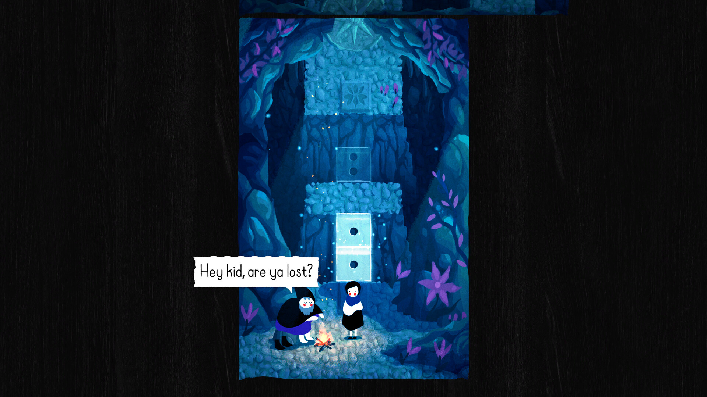
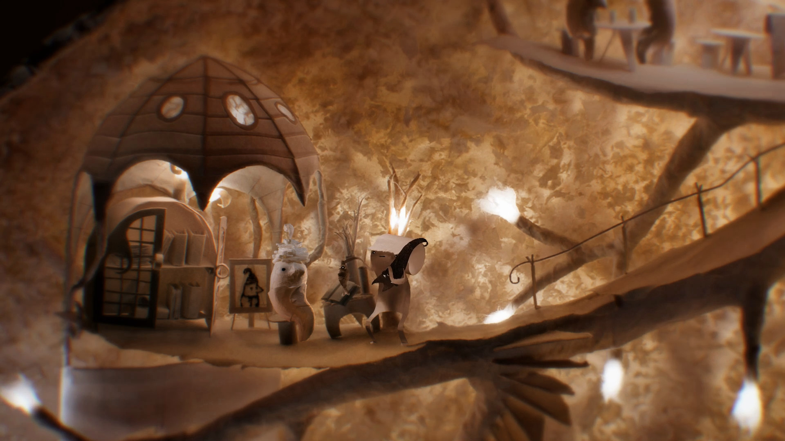
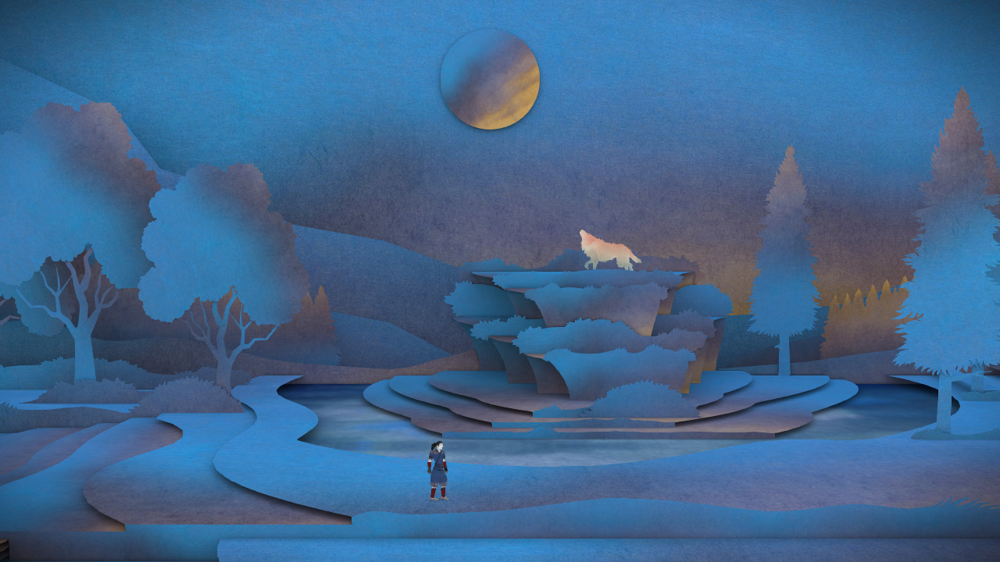
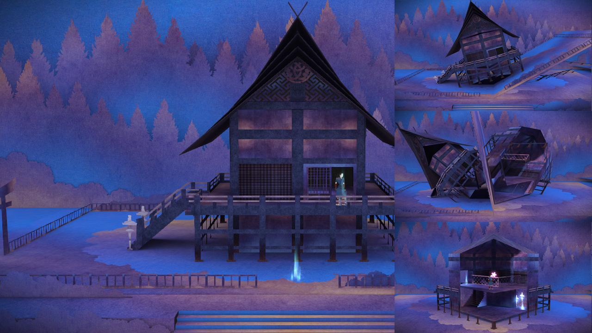

FIELD NOTES / ISSUE 003
纸感世界：折叠、透光与立体书
本期目录 展开章节
本期使用三款游戏的六张官方商店图。玩法背景附官方来源，画面拆解与制作规格是本期设计分析；不把三作归为同一种制作技术。
纸感游戏最值得学的，是纸怎样参与空间和操作。Paper Trail把世界画在可折叠的平面上；Papetura让实体纸艺的透光与弯曲成为氛围；Tengami把立体书的层片和开合关系变成场景。三者都像纸，却让玩家用不同方式理解眼前的世界。本期沿着“边界—厚度—变化”观察，区分表面纹理和真正影响玩法的结构。
先看结构，再看纸纹
截取任何一张图，先问三个问题：哪些边缘说明一层盖住另一层？哪些明暗说明材料有厚度？哪些地方让人预期它能翻、折或被操作？颗粒可以增强触感，但无法替代这些信息。如果删除纸纹后仍能看出纸片、卷曲或立体书，风格的骨架才成立。
以下只对可见画面下判断。商店图可能隐藏HUD或经过展示编排，不能由一张静态图推断全部操作、动画帧数或技术管线。Tengami的神社图本来就是多状态拼图，不是我们把连续操作录像拆成帧；这种区别也会影响你能从参考中学到什么。
01 · Paper Trail：让边界解释折叠
事实背景。Newfangled Games把它定义为可折叠纸世界里的俯视解谜冒险。官方介绍提到通过折叠连接世界两面，也明确提到版画、水彩等平面表现的影响。这里的“手作感”是视觉语言，不能据此声称整款游戏来自实体纸模摄影。开发者官网 · 官方商店

配色与阅读顺序。第一眼是大面积青绿池水，第二眼是暖褐木桥，黑白主角站在桥面上。桥和水先通过冷暖与轮廓分开，主角再用极简黑白块从有纹理的环境中跳出来。上方枝叶和下方深色草叶形成边框，中央仍留出完整的活动区域。若让水纹、叶片和角色都具有同样强的反差，路径会更难读。
轮廓与空间。右下斜线切断纸面，左侧图案的朝向发生变化，外部深底使纸的范围明确。木桥有短小支脚和暗边，但空间信息主要仍由平面图案与遮挡组织。学习时应先画一张能读懂桥、水、纸边的简图，再增加纤维与色斑。截图呈现折叠中的空间关系；具体可折范围和解法仍要通过实机或官方视频核对。

UI也要像同一本书。洞穴图的对白放在不规则白纸条上，黑字直接可读；它与场景的纸边呼应，却没有把文字藏进高密度石纹。亮青色矩形在暗洞穴中突出。我们能确认它受到视觉强调，不能只凭截图断言它当时可交互。可迁移的方法是让对白、提示和场景共享边缘语言，同时把文字区的背景简化。
制作取舍。平面场景减少了写实材质的要求，却增加了两面内容对齐、折叠遮挡和路径连接的检查工作。小团队可先做一条折线、两块地面和一个连接目标，把展开与折回都验证清楚。角色脸部应在手机缩略图里保持辨识，不要用随机纸纹破坏黑白块。
02 · Papetura：让光照出纸的厚薄
事实背景。Petums的官方页面将Papetura描述为以纸手工制作世界的点击冒险，故事通过动画和声音表达。这里有明确的实体纸艺依据；但下文不猜测每张图的灯具、镜头参数或后期合成做法。研究重点是最终画面里能看到的卷边、接缝和透光。官方介绍与图库

同色也能有层次。场景主要是暖褐与乳白，层次依赖亮度、遮挡和边缘厚度。左侧拱门的内外明暗分开，中央人物前后重叠，右侧坡道沿画面上升。背后亮光照出墙面纤维，而拱顶和坡道底部较暗。手作温度来自材料被折、卷、拼接后留下的变化，不需要给每件物体换一种颜色。
形体必须承受光。扶手末端卷成钩，拱门分出纸片拼接，人物的耳朵或翅状部位有折弯。它们把“纸”从表面贴图变成结构。迁移到原创项目时，可先设计三类动作：平片剪裁、卷曲成管、折成体块；同一类资产重复使用相同边缘规则，才能避免像来自不同材质库。
透光要有对照。壳体的拼片中央较亮，接缝和外缘较暗；叶状物边缘与内部亮度也不同。右上生物近乎黑色，眼睛形成很小的亮点。因为画面保留了足够深的区域，亮处才像光穿过材料，而不是整张图被统一提亮。不要把这个可见效果直接等同于某个特定着色器。
可读性与代价。中央角色在同色场景中并不总像Paper Trail那样醒目，因此取景与明暗安排更重要。学习这一路线时，先固定镜头测试角色与目标的轮廓，再增加浅景深、反光等氛围。实体手作需要制作、拍摄、修边与迭代，数字仿纸也需要维护边缘和光照一致性。纸艺看似朴素，并不自动等于便宜。
03 · Tengami：用层片搭出立体书
事实背景。Nyamyam的官网说明，Tengami以日本传统工艺启发的立体书世界为舞台，通过翻、折、滑动和拉动部分场景解谜。它与Papetura的实体纸艺路径不同，本期不把它写成真实纸模摄影。开发者官网 · 官方商店

深度来自层与层之间。前景地面边缘露出厚度，中央小岛像数张不同大小的纸叠起，树木轮廓相对平。每层下方的暗边说明上下关系；树干不必画得像圆柱，仍能围出舞台。蓝紫大色面使环境统一，中央白狼因为位置较高、颜色较亮成为视觉焦点。角色很小，反而让小岛成为明确的观察对象。
镜头控制了你能相信的空间。这张图同时看得到地台顶面和切边，所以纸层容易成立。随意把镜头移到完全侧面或背面，可能暴露原本不需要表现的结构。对原创实现而言，固定镜头能缩小验证范围；若必须自由旋转，就要另外处理背面、交叉与薄片遮挡。这是开发建议，不是对原作内部场景组织的结论。

折叠改变的是结构。左图神社完整站立，右侧小图出现展开的建筑片和不同形态。对学习者而言，比贴纸纹更关键的是先确定哪些面保持连接、哪些边担当折轴、变化后角色站在哪里。只做终态漂亮的建筑，到了折叠中间就可能互相穿插，甚至挡住路径。
反馈与制作取舍。纸书形式让人预期直接拨动场景，但截图不能给出全部操作提示。原创方案可以用边缘微亮或清晰的拉动部位说明交互，文字仍应足够清楚。先验证展开、中间、收拢三个状态的轮廓和碰撞，再加装饰。立体书节省不了结构设计；精力应留给轴点、层序、遮挡和角色落点。
横向比较：同样像纸，工作重点不同
| 案例 | 最先观察 | 可迁移的方法 | 优先验证的代价 |
|---|---|---|---|
| Paper Trail | 纸边、图案朝向、路径 | 平面色块与纸面变换一起设计 | 两面连接、遮挡与解谜可读性 |
| Papetura | 卷边、接缝、透光 | 用材料结构和明暗表达体积 | 制作或拍摄迭代、角色分离 |
| Tengami | 层片厚度、暗边、折叠状态 | 让立体书结构参与空间变化 | 折轴、穿插、碰撞与镜头 |
选择参考时，先写出自己的核心动作：连接道路、观察故事，还是打开机关？对应的美术证据应出现在玩家最需要判断的位置。纸纹可以统一触感，但不应该把可走边界、人物脸和按钮都变脏。三作的视觉规则可以分别学习，完整画面和游戏资产不能直接挪用到自己的产品。
一份可执行的原创风格规格
假设制作一个固定镜头的纸书庭院，可把范围控制为三层地台、两种树型、一扇门和一个折叠机关。先指定地面、装饰、角色、UI的层序，颜色限制为两个环境色系加一个提示色；纸纹只做低强度变化。所有边缘统一厚度尺度，阴影朝向一致，人物脸与文字背景保持干净。这些是本期建议的规格，不是原作公开参数。
验收分三次：缩到手机阅读大小，看人物和路径是否仍能被找到；关闭纹理，看轮廓与层次是否成立；停在折叠中间，看物体是否穿插或遮住目标。若最后一项失败，优先改结构，再调颜色。UI至少区分待操作、操作中、完成三态，并为重置和返回提供稳定位置。
本期参考调色板
原创纸书庭院 · 为本期AI实操设计的参考色板，不是原作截图的精确采样。
#F4EBDD纸面基底与清楚的留白#D4C6AB纸层厚度与暖灰过渡#90A88A植物亮部与低反差过渡#4C806F树木与环境主体#273B43暗边、轮廓和空间分离#D88A4B邮筒与少量交互强调纸白与浅纸色保持轻盈，柔绿和青绿分出环境层，深蓝灰承担暗部；暖橙只给邮筒等视觉重点。
用于AI生成时，把上述色名和HEX值写入母版提示词，后续单件、修图与状态扩展继续沿用。HEX用于约束方向，输出仍需人工对色和统一。
用AI做一座纸感庭院：从参考到可用素材
下面是一份可照着执行的原创制作方案，尚未实际生成素材或在引擎运行。提示词、色值、画布与验收阈值都是本期教学建议，不是三款原作的参数；它们也不保证一次生成即满足要求。
先定义一个能完成的小成果
目标是一座固定斜俯视镜头的“纸书邮局小院”：入口在左下，中央留出通路，右上是一扇门，路边放一个可点击邮筒，外围两种树。最终交付一张风格母版、分离的背景与前景、两种树、一个邮筒，以及邮筒待操作/完成两态。先做静态2D版本；只有选择立体书开合路线时，才增加三层可活动纸台。
沿用上方六色色板：纸白#F4EBDD作基底，浅纸色#D4C6AB补纸层过渡，柔绿#90A88A连接植物亮部，青绿#4C806F组织环境，深蓝灰#273B43用于暗边，邮筒用暖橙#D88A4B强调；光从左上来，树和建筑的比例统一。先手画一张道路、门、邮筒位置清楚的灰盒，不要求画得漂亮。这张灰盒锁住布局，之后只比较视觉规则，避免AI每次重排关卡。色板可整套调整，不能每生成一个资产就另换一套颜色。
工具只负责一个明确环节
支持参考图编辑的图像生成工具负责母版、独立物件候选与局部修改；分层绘图工具负责修边、补遮挡、统一色彩和导出透明素材；Godot负责摆放、碰撞与点击反馈。Tengami式立体书分支还需要Blender或其他建模工具确定几何与折轴，AI只协助概念和纸面图案。
如果使用OpenAI图像工具，可把上一轮选定图片作为编辑输入继续修改；透明输出需在所用工具支持时明确选择，并保存为PNG或WebP，不能把画出来的棋盘格当作透明。局部编辑可能影响原本要保留的区域，每次仍需对照母版。这里说明的是能力入口，不依赖某个固定模型、订阅档位或付费套餐。官方图像生成与编辑说明
六步完成一组可以组装的候选素材
- 步骤1 · 做灰盒和规格。输入是上面的庭院目标与手绘灰盒。让AI先用文字指出入口、通路、遮挡和视觉焦点，不直接重画；人确认后保存灰盒与一页风格规格。输出应说清每件资产属于背景、活动区还是前景。
- 步骤2 · 生成母版。把灰盒作为参考，用下方母版提示词生成少量候选。只选道路和物体位置仍正确的一张；漂亮但改了入口的图直接退回。输出为一张被选定的母版，连同提示词、工具版本与日期保存。
- 步骤3 · 先修母版。输入选中图与具体问题，只改一个区域，例如降低地面纹理、给门前留白。使用下方局部修正提示词，修改后再次对照原图的角色比例、树形与光向；一次修改若造成整体漂移，就回到上一版重做该局部。
- 步骤4 · 分件生成。保留母版作参照，每次只生成一件树或邮筒。使用单资产提示词，明确完整轮廓、固定视角、留边与透明要求；不要直接把整张场景图裁成资产，因为被遮住的背面和半截物体并不存在。输出先进入候选目录。
- 步骤5 · 修图并组装。在分层绘图工具里检查真Alpha、补全被裁边缘、统一颜色，把投影与物体分开。背景去除邮筒后要补画原地面，避免叠出两个邮筒。按素材清单导出，在同一张预览里检查接地线和尺度，合格后才放入可用目录。
- 步骤6 · 放进引擎验收。把背景、前景和单件素材导入Godot，静态图可用Sprite2D组织，邮筒另设点击区域与反馈；树的视觉层和碰撞分别处理。图像不会自带交互规则，代码由人或代码助手实现并实际运行。先验证玩家看得见、到得了、点得中，再做动画扩展。图像导入文档
四段可直接改用的提示词
方括号内是可改变量。先固定[镜头]、[色板]、[光向]与[轮廓规则]，选定母版后不要在每次生成时重新描述另一种风格。实际使用时附上灰盒或母版；没有附图的“参考母版”四个字不会自动提供参考信息。
提示词1 · 从灰盒生成母版
根据我附上的灰盒，绘制原创的[纸书邮局小院]游戏美术概念图。严格保持入口、道路、门和邮筒的位置与[固定斜俯视镜头]。采用[平面剪纸轮廓、清楚纸边、低强度纤维纹理]；色板限定为[纸白#F4EBDD、浅纸色#D4C6AB、柔绿#90A88A、青绿#4C806F、深蓝灰#273B43]，只让邮筒使用[暖橙#D88A4B]强调。[左上柔光]，树高与门高的关系统一，中央通路和门前留白。完整呈现一座可制作的小院，不增加建筑、文字、现成游戏角色或标志。这一轮是完整场景母版，背景不透明。
提示词2 · 从母版生成一个资产
以附图作为视觉规格参照，生成一个原创[邮筒]单件候选。保持母版的[斜俯视角度、暖橙色块、左上光向、纸边厚度]，完整轮廓放在方形画布中央，四周留空，底部接地点清楚。只保留物体，不含地面、背景、独立投影或文字；请求工具实际支持的透明背景，输出可保留Alpha的格式。不要生成整座庭院，不改变已有物体比例。这是一件候选，之后仍要人工检查透明边缘。
提示词3 · 只修一个失败区域
编辑附上的母版，只处理[门前与主路的高频纸纹]，降低这些区域的纹理反差，保持纸的外轮廓。入口、道路宽度、门、邮筒、树的位置、镜头和主色保持原样；不要新增物体或改变其他区域。修改目标是让[手机缩小预览中的门和通路更清楚]，请保留原图其余部分。完成后我会对比修改前后的全部画面，检查是否误改。
提示词4 · 扩展同系列而不换风格
沿用附图母版及已经选定的[邮筒]，制作同系列的[完成状态邮筒]。仅将[盖子打开少许，并增加一个无文字的纸片形标记]，其余轮廓尺寸、底部接地点、镜头、色板、光向与边距保持一致。单独输出这一状态，使用与原件相同的画布和透明要求。不要把状态差异仅做成红绿换色；不得新增背景、人物、道具或另一种材质。
三种参考，分别怎样转译成原创方案
路线A · 学Paper Trail的平面拼贴与边界
在母版提示词中保留大色块、低纹理密度、人物与地面分离，增加“纸面范围明确、折线两侧图案朝向可辨”。输入仍用自己的庭院灰盒，只生成平面视觉候选。人工把纸的两面、道路与遮挡分别整理；如果要做折叠解谜，先在引擎中用简单色块验证折前折后连接关系，再绑定美术。验收看道路能否接上、两面的标记是否混淆；一张看似折过的插画不能代替可操作的折叠系统。
路线B · 学Papetura的卷边与暖光
把母版的材质描述换成“原创卷曲纸艺、可见接缝、薄片透亮、厚边偏暗”，布局继续固定。低门槛方案先生成固定镜头概念，再人工分成远墙、活动地面、前景卷叶三层，保持烘焙光照方向一致；需要更换光照的物件不要把强投影画死在贴图里。AI有助于比较材质气质，人工仍要修边、遮挡和角色分离。验收关掉前景、缩小画面，确认邮筒和门仍可读；这是学习纸艺视觉的数字方案，不是对Papetura手工制作管线的复刻。
路线C · 学Tengami的立体书层片与开合
AI先生成三张同布局的状态设计参考：展开、中间、收拢，用来讨论轮廓，不能把三张图当作已经一致的3D动画。随后在Blender人工搭三层纸台，把活动片的旋转轴放在预定折边，逐个检查中间状态的穿插；AI只另做纸面图案，要求平面正视、弱光照、不带现成透视与投影。模型与贴图整理后导出到引擎，用真实轴点驱动开合，另验证碰撞与角色落点。不会建模时先停在静态分层版本；不要承诺用一张AI图得到可折叠3D场景。Godot的3D格式与导入说明
一组最小素材交付清单
以下画布是本期最终整理建议，生成工具若不支持该尺寸，应先在支持的尺寸生成，再人工重采样、清边与检查；不是把尺寸写进提示词就保证输出准确。
- yard_master.png：风格母版，最终整理为1536×1024，供统一视觉参照，不直接充当全部可交互资产。
- yard_background.png / yard_foreground.png：同画布的后景和前景，前景保留Alpha；地面、门前与被移除物件的位置要补全，叠加后不能露出重复邮筒。
- tree_round.png / tree_tall.png：各512×512候选整理稿，底部接地点对齐，阴影单独处理，同一镜头和色板。
- mailbox_idle.png / mailbox_done.png：各512×512，同画布、原点与边距；只改变状态，不改尺寸或接地位置。
- paper_yard.blend / paper_yard.glb：仅立体书分支需要；保留可编辑源、折轴与层片组织，导入后另测材质、尺度和动画。不存在的文件不能登记为已经交付。
常见失败，下一步具体改什么
- 每件素材像不同游戏：回到同一母版和色板，删掉新增风格词，一次只扩展一个物件；把候选并排放回庭院，先统一光向与轮廓，再修细纹理。
- 假透明或白边：在深浅两种底色上查看Alpha，清除边缘残色，补全被裁轮廓；必要时用绘图工具抠图，不能保留生成出来的棋盘格。
- 修改后道路移位：放弃这次误改，回到上一版，以更小的目标区域重做；用原灰盒叠加对照位置，不接受“整体更漂亮”作为通过理由。
- 折叠中间穿模：回到几何与轴点，减少层数或缩短活动片，再检查三个状态；反复换一张AI贴图不能修复错误的空间连接。
完成前，逐项验收
- 缩到390像素宽，人物、门和邮筒仍能分开；找不到目标时先改明度、位置或留白。
- 全部候选放在同一画面，镜头、色板、纸边厚度和光向一致；不把单件好看等同于整套成立。
- 透明素材在深浅底色上无明显残边，两个邮筒状态的接地点不跳；前后景叠加无重复或洞。
- 实际运行能走到或点到邮筒，视觉位置与点击/碰撞范围相符，完成状态能被理解。
- 立体书分支逐个停在展开、中间和收拢状态，检查穿插、遮挡与角色落点；2D分支不冒称通过3D验收。
- 保留母版、提示词、分层源文件、候选与可用资源清单；本期未实测的项目保持“待验证”，读者完成自己的运行检查后才改为通过。
你更想走进哪一种纸世界？
是Paper Trail的彩色拼贴、Papetura的暖光纸艺，还是Tengami的蓝色立体书？选一个最打动你的画面细节：边界、透光、层片，或你发现的另一处。先描述具体位置，再解释它怎样影响自己的感受。
来源与图片归档
资料检索与图片下载：2026-10-22。六张图片均来自各游戏开发者提供的Steam图库，保留原图；局部放大用于画面分析。版权归各权利人，不能提取为自有游戏资产。本期文字经AI辅助整理，不使用AI图冒充游戏截图。